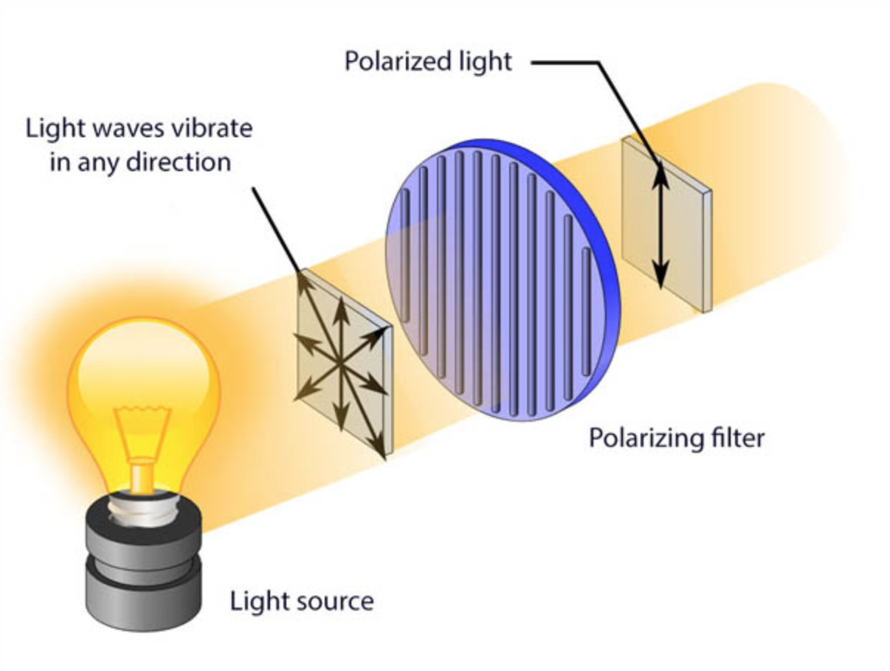
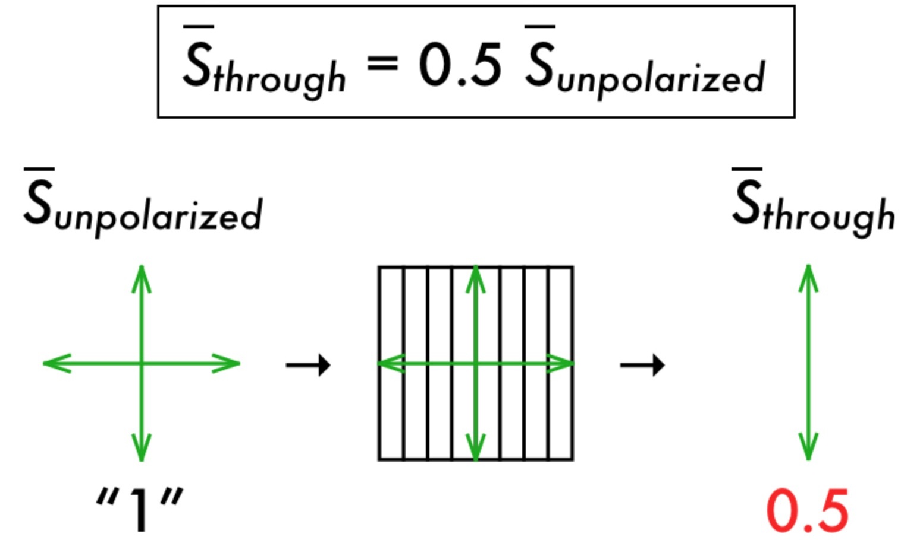
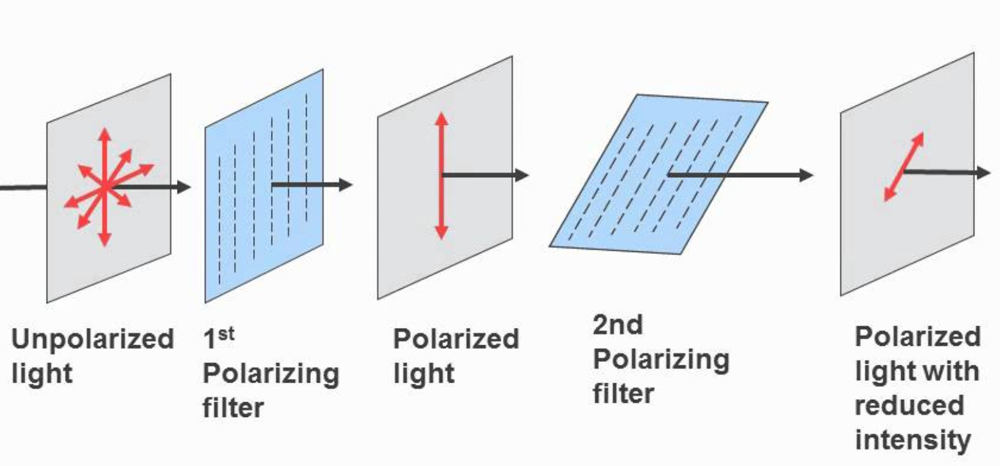
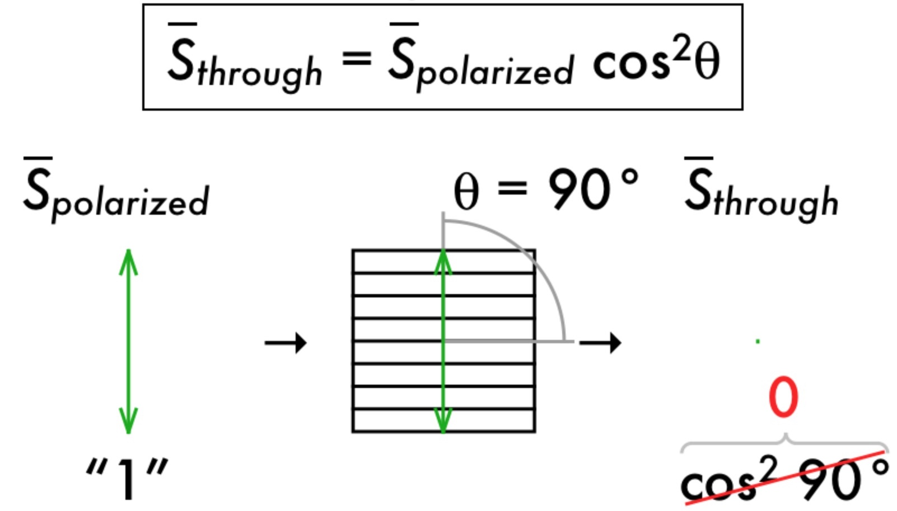

Toggle Primary Polarizer
(Horizontal polarization)
On bright, sunny days, many of the sun's light rays reach our eyes (not so much on gloomy days). This means that the intensity of the light is greater on sunny days. Additionally, if there are any surfaces that greatly reflect the sun's light, such as snow, the intensity increases even more. For these occasions, it's nice to have sunglasses while you're outside.
But hang on...sunglasses will help, but polarized sunglasses will help the most! Let's look at why that is.
Unpolarized light, such as the light from the sun, emits rays in every direction, like so...
A polarizer, such as polarized lenses, actually restricts much of these rays from coming through. It does this by "polarizing" the light. Polarizing light is kind of like filtering by the vector components of the rays - it only allows rays with certain components to pass through. For instance, if the polarizer is aligned vertically (up and down), it will only allow the vertical components of light rays to pass through. This produces light that is oriented in one direction, rather than all over.
Image credit: http://www.skyandtelescope.com/observing/polarized-light-from-blue-sky-to-egg-nebula/
So how does this help? By reducing the intensity (S) of the light! On a sunny day, polarized lenses will automatically reduce the intensity of the light around you by half.
Image credit: http://waiferx.blogspot.com/2013/01/presentation-polarization.html
Where things get interesting is when you add a second polarizer to the mix - polarizing light that is already polarized. How would this affect the overall intensity of the light?
If polarized light is polarized again, you may expect the intensity to be 25% of the unpolarized light; the first polarizer halves the intensity, and the second polarizer halves it again ( x = ). This assumption is correct, as long as the angles/orientations of the polarizers are the same (they are parallel). When the polarizers are not parallel, the second polarizer lets through only certain components of the polarized light.
Image credit: https://www.youtube.com/watch?v=lZ-_i82s16E
In this situation, what if the polarizers are perpendicular to each other? How would this affect intensity? The intensity of the light would actually decrease to zero. To explain how this works, let's consider two polarizers: one that is completely vertical (90° with respect to the surface), and one that is completely horizontal (0° with respect to the surface). The vertical polarizer will orient the light rays to 90°, which means the vectors have no horizontal component. When the horiontal polarizer filters out the vertical component to allow only horizontal components through, it filters all the light, because the rays are entirely vertical due to the vertical polarizer. Since no light gets through, the intensity is zero.
We can quantify the effect a second polarizer has on already-polarized light by looking at Malus's Law:
S = S0cos2θ
S = intensity of light after passing through the second polarizer
S0 = intensity of light before the second polarizer (after the first)
θ is the angle of the second polarizer with respect to the first
Using Malus's Law, let's analyze the effect of a horizontal polarizer that is perpendicular to a vertical polarizer. We know the angle, θ, is 90° because the polarizers are perpendicular. We also know the initial intensity (intensity of the light entering the second polarizer), S0, is 0.5 due to the first polarizer. Plugging these values into Malus's Law, we get:
S = cos2(90°) = 0
Malus's Law mathematically explains how the overall intensity of the light drops to 0 when passing through two perpendicular polarizers.
Image credit: http://waiferx.blogspot.com/2013/01/presentation-polarization.html
Let's also apply Malus's Law to when the polarizers are completely parallel to each other.
S = cos2(0°) = 0.5
This result, in this case, may cause one to believe that the light's intensity after the second polarizer is still 0.5. However, remember that the intensity calculated by Malus's Law is relative to the intensity entering the second polarizer. Since the intensity entering the second polarizer was 1⁄2, the intensity is now half of that. In other words, the overall intensity is 1⁄4 that of the unpolarized light ( x = ).
It's a bright, beautiful day, and you're spending it on the snow-covered ski slopes. Since light is relfected intensely off the snow, you'll want a good pair of polarized sunglasses. Let's explore how those sunglasses actually work!
To get started, you can drag the polarized sunglasses around your screen, and rotate them in any way. To see what happens when light is polarized by two different polarizers, toggle the Primary Polarizer, and rotate the sunglasses.
When rotating the sunglasses, you can check the angle of rotation in the sidebar on the right of the screen. Also note how the polarizers affect the intensity of the light (Ssunglasses).
Once you're ready to learn why this happens, open up the "Theory" section for a full explanation on the physics of light polarization. Let's science!